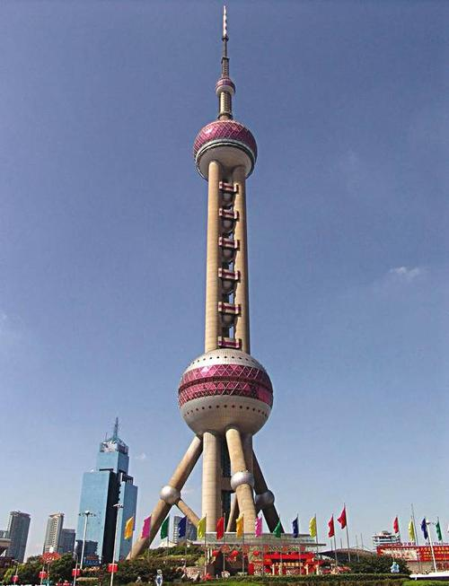

1983年8月25日，上海市广播事业局局长邹凡扬向市长汪道涵、副市长阮崇武和国家广播电视部领导分别写信，初次提出了利用外资建造新电视塔的设想。
1983년 8월 25일, 상하이시 방송사업국장 쩌우판양 (추진양)이 왕다오한 (王道한) 시장과 롼충우 (阮武) 부시장과 국가라지오텔레비죤방송부 지도자들에게 편지를 써서 처음으로 외자를 이용하여 새로운 tv 송전탑을 건축할 구상을 밝혔다.
东方明珠
1984年3月25日，汪道涵市长在上海市八届二次人代会上所作的市政府工作报告中正式提出：上海将新建一座电视发射塔。
1984년 3월 25일, 왕도함시장은 상해시 제8기 제2차 인대회의에서 한 시정부사업보고에서 상해에서 텔레비죤발사탑을 새로 건설한다고 정식으로 제기하였다.